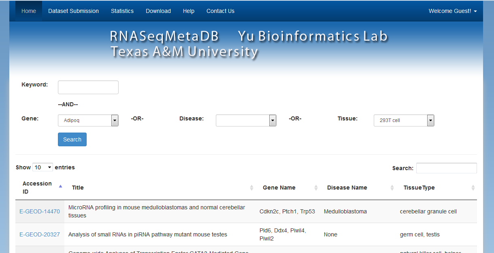

Web Development
Educational Web Application: My Study Notebook
www.mystudynotebook.com/
is an online platform to provide end to end solution to higher
study aspirant students. I founded the organization in 2016 and lead the software development
team and supported the team on any available free time including weekends, holidays and after
works.
Lead the team of four developers in designing, developing, testing and deploying
http://www.mystudynotebook.com/
Configured Linux/Ubuntu server and Apache, Nginx, Supervisor, RabbitMQ and Celery to run
Python/Django application on top of Linux server
Guided the team in designing and optimizing Postgres database
Developed the most advanced online practice and mock test module for Graduate Record Examination
(GRE)
I
Bioinformatics Web Application: RNASeqMetaDB
RNASeqMetaDB is a database and web server for navigating metadata of publicly available mouse RNA-Seq datasets. You can quickly search for the gene datasets you want by using the features provided by this service. The user interfaces are very friendly. The backend APIs are realized using Python and Flask with well designing of MySQL schema.
.'/includes/resources/img/bdsports.PNG' ?>)
.'/includes/resources/img/wcs.PNG' ?>)
Company Website: www.dynamicsolutionsbd.com
Fully fledged company website, describing the products, services and solutions. Product adding, editing, deleting capability. Viewers can send feedback.
.'/includes/resources/img/dynamic_solutions.PNG' ?>)
Social network, Education based site. http://www.lal-shobuj.com
Students can have their own profile, can update status, can comment of file, others status, upload and download necessary file, upload his own resume.
.'/includes/resources/img/lal-shobuj.png' ?>)
Performance Management Tool for Telecom industry
This tool was developed to automatically prepare performance report for radio network Planning department of Grameen Phone. This web based tool is capable of storing huge data with a central database system.
.'/includes/resources/img/pmt.png' ?>)
PSD to WordPress theme http://plumber.whitecanvassoft.com/
This theme was developed from a psd, having custom widget, custom sidebar. Unique design is the specialty.
.'/includes/resources/img/plumber.jpg' ?>)